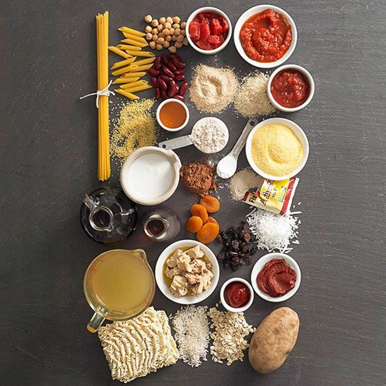

Ingredients
- 3 large skinless, boneless chicken breast halves - cut into ½-inch
medallions
- salt and pepper to taste
- ½ cup all-purpose flour
- 2 tablespoons vegetable oil, or as needed
- 1 clove garlic, minced
- 1 cup low sodium
- chicken broth ½ lemon, thinly sliced (Optional)
- ¼ cup fresh lemon juice
- 2 tablespoons capers, drained and rinsed
- 3 tablespoons butter
- 2 tablespoons minced Italian (flat-leaf) parsley